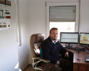

Betoniarnia Gryfów Śląski
Wytwórnia betonu PROBUD, Ubocze 296,
tel. 691 099 430
Wytwórnia betonu PROBUD, Ubocze 296,
tel. 691 099 430
Wytwórnia betonów PROBUD jest firmą rodzinną z wieloletnią tradycją. Aby wyjść naprzeciw rosnącym wymaganiom naszych klientów, w lipcu 2014 r. wytwórnia została całkowicie zmodernizowana. Wprowadziliśmy najnowocześniejsze technologie, pozwalające podnieść jakość naszych wyrobów, oraz znacznie skróciliśmy czas produkcji, nad którą czuwa zaawansowany system komputerowy odmierzający komponenty z najwyższą dokładnością. Nad jakością naszych betonów czuwa laboratorium budowlane LABTECHNE. Dysponujemy betonowozami o poj. 6 i 9 m3 z teleskopowym podajnikiem taśmowym o max. zasięgu 16m. Od wielu lat wyróżniamy się na rynku najwyższą jakością wyrobów, rzetelnością i lojalnością wobec klienta.
Nowoczesny węzeł betoniarski sterowany komputerowo
Precyzyjne dozowanie komponentów
Powtarzalność receptury
Betonomieszarki o pojemności 6 oraz 9m3 z taśmowym podajnikiem teleskopowym dł. 16m
Stała kontrola laboratoryjna produkcji
Prace przy modernizacji nawierzchni rynku w Gryfowie Śląskim.
Prace przy modernizacji nawierzchni rynku w Gryfowie Śląskim.
Prace przy budowie muru oporowego.
Mur oporowy w Gryfowie Śląskim.
Hala produkcyjna w Uboczu.
Hala produkcyjna w Uboczu.
PROBUD PRODUKCJA BETONU
Halina Kowalonek
ul. Zielona 3
59-620 Gryfów Śląski
NIP: 616-116-28-63
Betoniarnia Ubocze 296
tel. 603 759 297
tel. 691 099 430
kowalonek.j@wp.pl